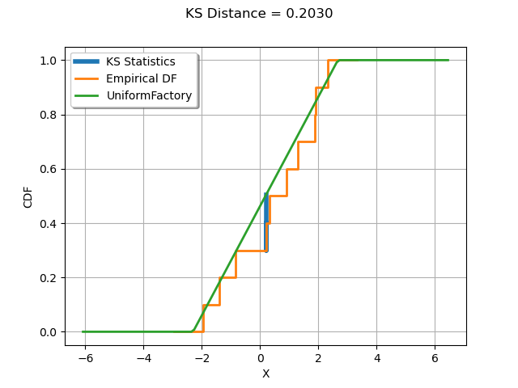

Note
Go to the end to download the full example code
Kolmogorov-Smirnov : understand the statistics¶
In this example, we illustrate how the Kolmogorov-Smirnov statistic is computed.
We generate a sample from a normal distribution.
We create a uniform distribution and estimate its parameters from the sample.
Compute the Kolmogorov-Smirnov statistic and plot it on top of the empirical cumulated distribution function.
import openturns as ot
import openturns.viewer as viewer
from matplotlib import pylab as plt
ot.Log.Show(ot.Log.NONE)
The computeKSStatisticsIndex() function computes the Kolmogorov-Smirnov distance between the sample and the distribution. Furthermore, it returns the index which achieves the maximum distance in the sorted sample. The following function is for teaching purposes only: use FittingTest for real applications.
def computeKSStatisticsIndex(sample, distribution):
sample = ot.Sample(sample.sort())
print("Sorted")
print(sample)
n = sample.getSize()
D = 0.0
index = -1
D_previous = 0.0
for i in range(n):
F = distribution.computeCDF(sample[i])
S1 = abs(F - float(i) / n)
S2 = abs(float(i + 1) / n - F)
print(
"i=%d, x[i]=%.4f, F(x[i])=%.4f, S1=%.4f, S2=%.4f"
% (i, sample[i, 0], F, S1, S2)
)
D = max(S1, S2, D)
if D > D_previous:
print("D max!")
index = i
D_previous = D
observation = sample[index]
return D, index, observation
The drawKSDistance() function plots the empirical distribution function
of the sample and the Kolmogorov-Smirnov distance at point x.
The empirical CDF is a staircase function and is discontinuous at each observation.
Denote by  the empirical CDF. For a given observation
the empirical CDF. For a given observation  which achieves the maximum distance to the candidate distribution CDF,
let us denote
which achieves the maximum distance to the candidate distribution CDF,
let us denote  and
and
 .
The maximum distance can be achieved either by
.
The maximum distance can be achieved either by  or
or  .
The computeEmpiricalCDF(x) method computes
.
The computeEmpiricalCDF(x) method computes  .
We compute with the equation
.
We compute with the equation  where
where  is the sample size.
is the sample size.
def drawKSDistance(sample, distribution, observation, D, distFactory):
graph = ot.Graph("KS Distance = %.4f" % (D), "X", "CDF", True, "topleft")
# Thick vertical line at point x
ECDF_x_plus = sample.computeEmpiricalCDF(observation)
ECDF_x_minus = ECDF_x_plus - 1.0 / sample.getSize()
CDF_index = distribution.computeCDF(observation)
curve = ot.Curve(
[observation[0], observation[0], observation[0]],
[ECDF_x_plus, ECDF_x_minus, CDF_index],
)
curve.setLegend("KS Statistics")
curve.setLineWidth(4.0 * curve.getLineWidth())
graph.add(curve)
# Empirical CDF
empiricalCDF = ot.UserDefined(sample).drawCDF()
empiricalCDF.setLegends(["Empirical DF"])
graph.add(empiricalCDF)
#
distname = distFactory.getClassName()
distribution = distFactory.build(sample)
cdf = distribution.drawCDF()
cdf.setLegends([distname])
graph.add(cdf)
graph.setColors(ot.Drawable.BuildDefaultPalette(3))
return graph
We generate a sample from a standard normal distribution.
N = ot.Normal()
n = 10
sample = N.getSample(n)
Compute the index which achieves the maximum Kolmogorov-Smirnov distance.
We then create a uniform distribution whose parameters are estimated from the sample. This way, the K.S. distance is large enough to be graphically significant.
distFactory = ot.UniformFactory()
distribution = distFactory.build(sample)
distribution
Compute the index which achieves the maximum Kolmogorov-Smirnov distance.
D, index, observation = computeKSStatisticsIndex(sample, distribution)
print("D=", D, ", Index=", index, ", Obs.=", observation)
Sorted
0 : [ -1.90224 ]
1 : [ -0.359084 ]
2 : [ -0.354591 ]
3 : [ -0.322106 ]
4 : [ -0.256126 ]
5 : [ -0.207582 ]
6 : [ -0.167592 ]
7 : [ 0.0475379 ]
8 : [ 0.105443 ]
9 : [ 0.647111 ]
i=0, x[i]=-1.9022, F(x[i])=0.0714, S1=0.0714, S2=0.0286
D max!
i=1, x[i]=-0.3591, F(x[i])=0.5903, S1=0.4903, S2=0.3903
D max!
i=2, x[i]=-0.3546, F(x[i])=0.5918, S1=0.3918, S2=0.2918
i=3, x[i]=-0.3221, F(x[i])=0.6027, S1=0.3027, S2=0.2027
i=4, x[i]=-0.2561, F(x[i])=0.6249, S1=0.2249, S2=0.1249
i=5, x[i]=-0.2076, F(x[i])=0.6412, S1=0.1412, S2=0.0412
i=6, x[i]=-0.1676, F(x[i])=0.6547, S1=0.0547, S2=0.0453
i=7, x[i]=0.0475, F(x[i])=0.7270, S1=0.0270, S2=0.0730
i=8, x[i]=0.1054, F(x[i])=0.7465, S1=0.0535, S2=0.1535
i=9, x[i]=0.6471, F(x[i])=0.9286, S1=0.0286, S2=0.0714
D= 0.49026922871885636 , Index= 1 , Obs.= [-0.359084]
graph = drawKSDistance(sample, distribution, observation, D, distFactory)
view = viewer.View(graph)
plt.show()

We see that the K.S. statistics is achieved at the observation where the distance between the empirical distribution function of the sample and the candidate distribution is largest.